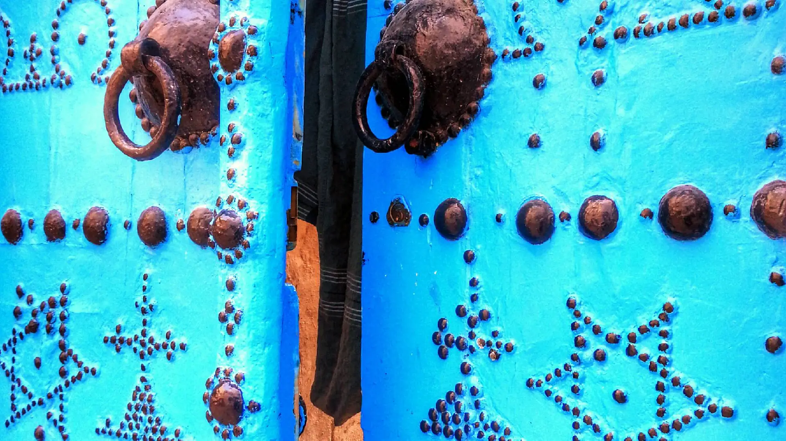

Pourquoi choisir Perma.doctor ?
Plus qu’une clinique, une expérience humaine et sur mesure, au service de votre bien-être.
- Médecins
experts - Cliniques
agréées - Suivi
personnalisé - Résultats
naturels

Une approche personnalisée pour révéler votre beauté naturelle, en toute confiance.
Plus qu’une clinique, une expérience humaine et sur mesure, au service de votre bien-être.
Des cliniques privées modernes et agréées, un environnement idéal pour votre convalescence, entre mer et sérénité.
Découvrir la clinique

Profitez d’un accompagnement complet : accueil à l’aéroport, hébergement, convalescence et découverte de la Tunisie.
Découvrir le séjourDes patients du monde entier partagent leur expérience avec Perma.doctor.